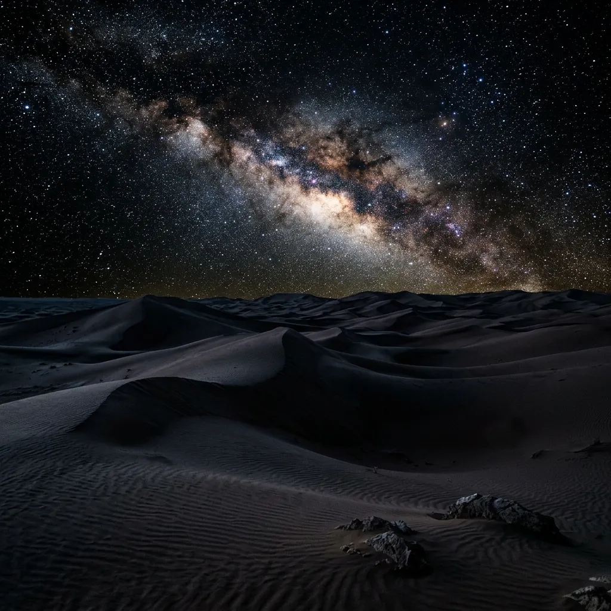
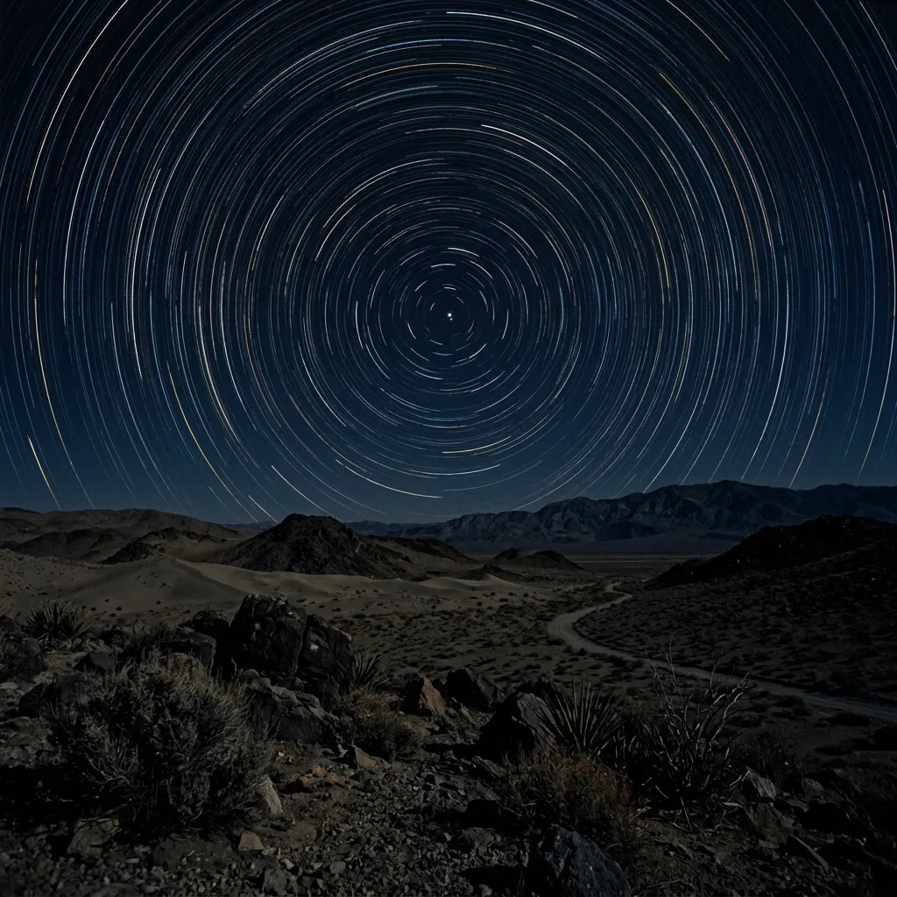
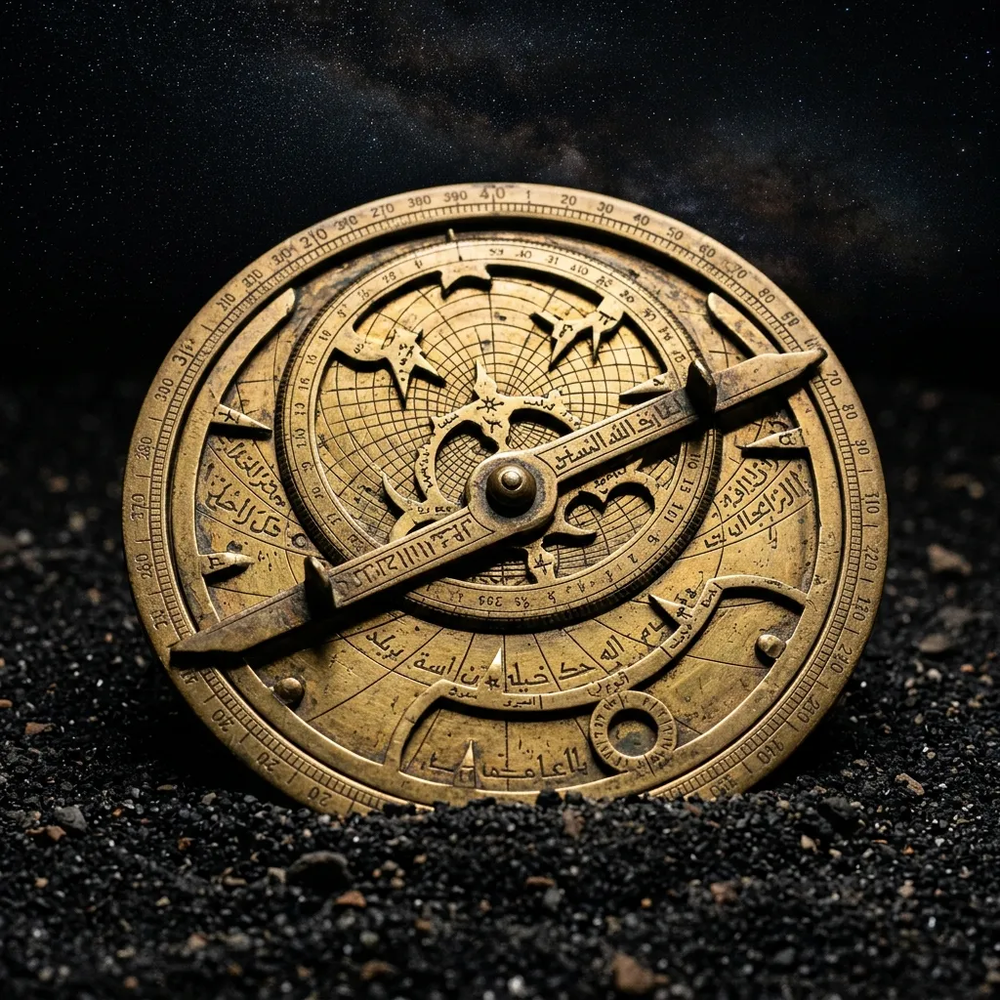

Navigate the silence of the dunes by the light of ancient stars.
A digitally-dark desert crossing. No global positioning systems. No cellular signals. No light pollution. Astrolabe Desert Treks offers a profound, nocturnal return to traditional celestial navigation across some of the most unforgiving, shifting dune landscapes on the planet. This is not a holiday; it is a physical and psychological stripping back to the fundamental core of human exploration.
Sever the SignalThe Philosophy of the Void
Our profound reliance on digital screens constantly atrophies our innate spatial awareness. By intentionally severing all ties to electronic navigation, we force the mind to reawaken its primal, evolutionary capabilities. In the absolute, terrifying dark of the desert night, travelling solely by starlight and the cold geometry of a brass astrolabe, the mind acclimatises to a silence that modern city living has aggressively eradicated. This forced digital detox strips away the artificial anxiety of continuous connectivity, replacing it with the acute, hyper-vigilant focus required for genuine survival. We march through the freezing night while the sand glows silver under the moon, and we sleep in deep shade when the searing daytime sun makes movement impossible. This inversion of the natural human circadian rhythm forces a profound psychological reset, demanding absolute surrender to the brutal, beautiful mechanics of the nocturnal desert.

The Terrain
The desert is deeply respectful of those who prepare, but entirely uncompromising to those who do not. During our nocturnal crossings, you will face freezing night winds that can plummet to near-zero temperatures, dropping the core body temperature dangerously low if you stop moving for too long. The disorienting optical illusions of moonlit sand make distance estimation incredibly difficult; a dune ridge that appears to be one kilometre away might easily be three. The constantly shifting landscapes require absolute rigour and strict spatial discipline, as your footprints are erased by the wind within minutes. We navigate these treacherous environments by triangulating our position against the North Star, Sirius, and Orion, maintaining strict physical proximity to the guide string to ensure no candidate is lost to the overwhelming vastness of the dunes.
Analogue Equipment & Survival Methodology
We provide a strictly analogue, highly technical toolkit designed for the harshest environments. Prior to departure, every electronic device—including watches, phones, and emergency beacons—is confiscated and sealed at basecamp. In their place, you must rely entirely on the craftsmanship of historical navigation tools. We issue each candidate with a heavy brass astrolabe, a marine sextant, and highly detailed topographical paper maps printed on waterproof parchment. Paired with modern, aerogel-insulated thermal bivouacs to survive the freezing nocturnal drops, this kit represents the absolute minimum necessary for survival. You will learn to measure the angle of celestial bodies relative to the horizon, calculating your precise latitude through mathematics rather than satellite pings. Every drop of water is rationed, and every piece of equipment serves a critical, life-preserving function.

Expedition Programmes
Our programmes are structured, challenging, and strictly vetted. We march by night under the stars to avoid lethal dehydration, and we rest in heavily shaded thermal tents during the searing heat of the day. Choose your level of psychological exposure carefully.
The Zenith Crossing
3 Days / 2 Nights — £1,200An introductory nocturnal trek focusing on fundamental astrolabe readings and basic dune acclimatisation. This route covers approximately thirty kilometres of undulating terrain, teaching candidates how to triangulate their position using the major constellations. Ideal for endurance athletes seeking their first exposure to extreme digital isolation.
The Obsidian Route
5 Days / 4 Nights — £2,800A gruelling endurance challenge. Deep desert penetration requiring advanced celestial navigation, strict water rationing, and immense physical rigour. We cover over ninety kilometres of high-angle dunes, culminating in a difficult sandboarding descent under the light of the new moon. Reserved strictly for proven applicants.
Frequently Asked Questions
How is safety managed without GPS?
While candidates are completely deprived of digital technology, the Lead Navigator secretly carries a sealed, military-grade satellite beacon. This device is strictly for life-threatening emergencies (e.g., severe scorpion envenomation or compound fractures) and its deployment instantly terminates the expedition for the entire team.
What happens during the day?
Daytime temperatures routinely exceed forty-five degrees Celsius. By 09:00, the team pitches heavy blackout tents. The daylight hours are spent sleeping, rehydrating with electrolyte solutions, and calculating the previous night's navigational drift on paper. Movement during the day is strictly forbidden to prevent lethal heatstroke.
Do I need prior navigation experience?
No prior experience with an astrolabe or sextant is required for the Zenith Crossing. We provide an intensive four-hour seminar at basecamp before departure. However, you must be capable of carrying a fifteen-kilogram pack through soft sand for eight hours continuously. The physical barrier to entry is extremely high.
Are the nocturnal drops really that cold?
Yes. The lack of atmospheric moisture means the desert cannot retain daytime heat. Temperatures can drop from forty degrees at noon to near freezing by 03:00. We issue specialised sub-zero trekking gear, but candidates must be mentally prepared for the severe physiological shock of these rapid temperature fluctuations.
Can I bring a camera?
Absolutely not. The confiscation of all digital recording equipment is non-negotiable. If you wish to document the crossing, we provide a graphite pencil and a leather-bound logbook. The visual memory of the Milky Way spanning the dune ridges must be committed entirely to your own biological memory.
Candidate Assessment
This is a strict barrier to entry. Ensure you meet the physical and mental acclimatisation standards before submitting your assessment. Our vetting committee will review your endurance background and statement of intent within forty-eight hours. Only candidates demonstrating exceptional psychological resilience and physical capability will be invited to basecamp.